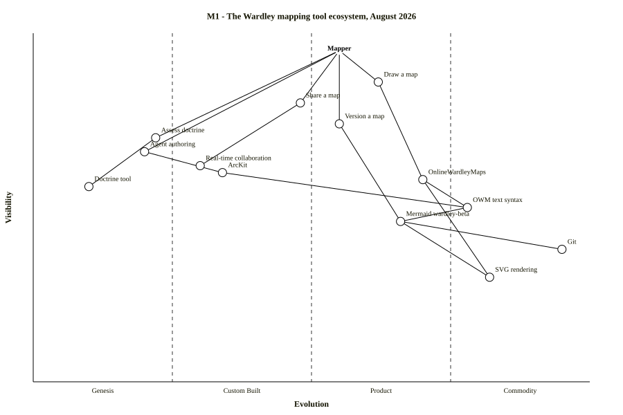
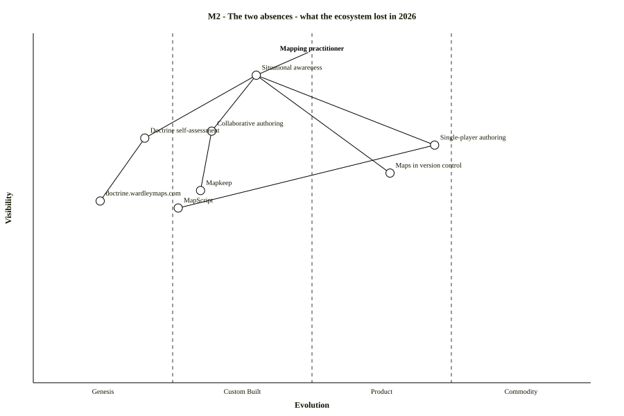
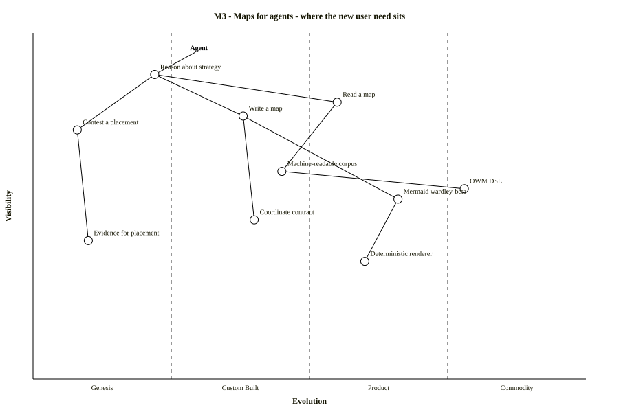
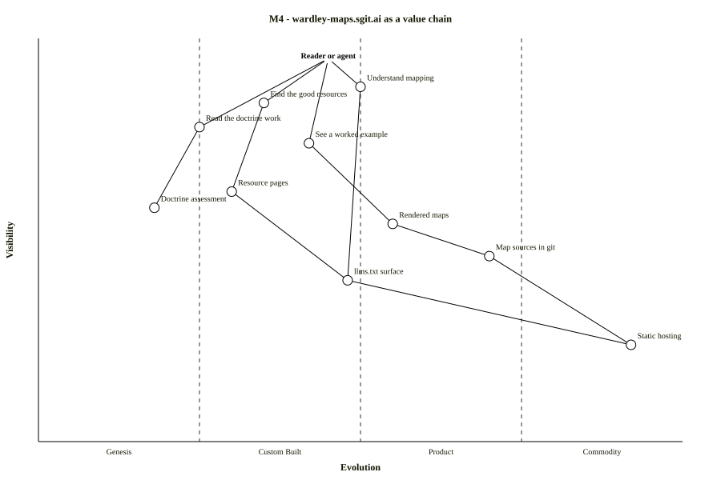

wardley-maps.sgit.ai / Maps
The map gallery
Four maps, each shipped as source next to render. That is not a presentation choice — it is the point. A rendered map is a picture you can admire or ignore; a map whose source sits beside it is an argument you can fork, edit and send back as a pull request. "The maps live in the source and are reviewable in a diff."
Each one below states what it claims and what would falsify it. A map that cannot be wrong is a decoration. If you think a placement is off, the coordinates are two clicks away and the repository takes pull requests.
M1 — The mapping tool ecosystem, August 2026

What it claims. Authoring and versioning are product-to-commodity and healthy. Collaboration, doctrine assessment and agent authoring sit at Genesis with nothing under them. Those three holes are not a coincidence: MapKeep was the only tool with real-time collaboration and died on 30 May 2026, and both doctrine assessment tools are dead.
What would falsify it. That agent authoring belongs on this map at all. It is placed at Genesis on the strength of one actively-maintained tool (ArcKit) and an argument; if agent authoring is really a feature of the existing tools rather than a user need of its own, the node should not be there. Also arguable: whether Git at 0.95 is doing any work on a map about mapping, or is just true.
M2 — The two absences: what the ecosystem lost in 2026

What it claims. The same point as M1, stated as loss rather than as a gap. Two user needs had working implementations in 2025 and have none in August 2026. Collaborative authoring lost MapKeep; doctrine self-assessment lost both of its tools. Single-player authoring and maps in version control are fine, which is why the loss is easy to miss.
What would falsify it. That the two absences are the same kind of thing. Collaborative authoring lost a tool that was working and popular; doctrine assessment lost tools that may never have had many users. If the second was already dead in practice, M2 overstates the loss by drawing them side by side.
M3 — Maps for agents: where the new user need sits

What it claims. Anchored on an agent rather than a person. Reading a map is served; writing one is half-served; contesting a placement is not served at all — and evidence for placement is the least evolved node on the map. That last node is the whole argument of /agents/.
What would falsify it. The claim that contest a placement is a distinct user need rather than a sub-need of writing one. And the placement of machine-readable corpus at 0.45: 147 maps in a public repository with paired OWM and Mermaid representations is arguably further right than that.
M4 — wardley-maps.sgit.ai as a value chain

What it claims. This site, mapped. Resource pages and the doctrine assessment sit at custom-built; the llms.txt surface is the shared component two branches depend on; static hosting is commodity. Drawn so that the site is subject to the same treatment as everything else on it.
What would falsify it. Whether rendered maps deserves 0.55 on a site that shipped four of them. And whether read the doctrine work is a real user need or a thing we happen to have and would like people to want. That second one is the honest failure mode of any map drawn by the party being mapped.
How they were rendered
The recipe existed in the corpus as prose for three months — "Mermaid CLI v11.14.0 plus
the Playwright-bundled Chromium" — with no script, no make target and no CI job. In that
time zero of the thirteen wardley-beta sources in the source repository rendered. It is
a script now: bin/render-maps.sh.
for f in maps/*.mmd; do
npx @mermaid-js/mermaid-cli@11.14.0 \
-i "$f" -o "${f%.mmd}.svg" -p puppeteer-config.json -b white -w 1400 -H 900
grep -q "error-text" "${f%.mmd}.svg" && echo "FAILED: $f" # the line that matters
done
wardley-beta source
does not fail. It renders a "Syntax error in text" SVG — no line number, no stderr,
exit status zero, and a byte-identical file every time. In a batch render that is
indistinguishable from success until somebody opens the file, which is precisely how thirteen
broken maps sat in a repository for three months.
The release gate runs the same check, so a map that
renders an error cannot be published.The coordinate contract, proven rather than repeated
Both OnlineWardleyMaps and Mermaid take [visibility, evolution], which is the
opposite of the usual (x, y). Everyone repeats this. This site tested it — probe
rendered with Mermaid CLI 11.14.0, plot area x∈[48,852], y∈[48,552], y growing downward:
anchor "A_high_vis_genesis" [0.90, 0.10] --> drawn at x≈128, y≈95 component "B_low_vis_commodity" [0.10, 0.90] --> drawn at x≈780, y≈494
First number = visibility → the Y axis, 1 = top, visible to the user.
Second number = evolution → the X axis, 1 = right, commodity.
There is no error and no warning if you transpose them. The map renders, looks plausible, and asserts something else entirely. That is the single most expensive fact on the agent page, and it is stated there with this evidence rather than as received wisdom.
The parse rule that removes a whole class of failure
The corpus knew hyphens broke component names. Bisection on Mermaid 11.14.0 established the full rule:
| In an unquoted name | Result |
|---|---|
spaces — Draw a map | OK |
underscores — Real_time | OK |
parentheses — Draw (fast) | OK |
hyphen — Real-time collab | FAILS |
dot — doctrine.wardleymaps.com | FAILS |
slash — AI/ML | FAILS |
Quoting fixes all three — component "Real-time collab" [0.7, 0.6] parses fine.
But quoting the declaration and not the link still fails: a quoted declaration followed
by User --> Real-time collab is a syntax error.
Quote every anchor and component name, everywhere it appears —
declaration, link lines, and evolve statements. It costs two characters and removes
the entire failure mode. The four maps above do this.
What else exists, and what does not
| Form | Count | Where | Renders? |
|---|---|---|---|
| These four, as SVG | 4 | Here, source and render | Yes |
| Rendered PNGs | 8 | Served from the sgit.ai Strategy Maps vault, client-side decrypted | Yes |
| Inline SVGs, generated client-side | 6 | sgit.ai/demos/sgit-maps.html | Yes |
Mermaid wardley-beta in published HTML | 10 | Across two pki.sgit.ai packs | Yes |
| Mermaid sources in the source repository | 13 | Three briefs | No — all 13 fail, for two mundane reasons |
| ASCII maps | 9 | Cartographer reviews, the founding brief, the primer | In monospace |
| Position tables used as maps | 8 | One June 2026 brief | Unrendered — and the most analytically dense maps in the corpus |
.owm files, map JSON | 0 | — | Specified, never implemented |
The thirteen fail because eight-plus use a bare ``` fence with
wardley-beta on the next line, four use ```wardley-beta, and
one note line is missing its required quotes. Both are trivial. Fixing them is
T2, and it is the cheapest high-visibility win available
anywhere in this project.
On these four maps
They are original works, drawn from this site's own research, and they are CC BY 4.0 with no ShareAlike obligation. The technique they use is Simon Wardley's and is credited as such — crediting a technique is courtesy and good practice, not a licence condition. The full position →